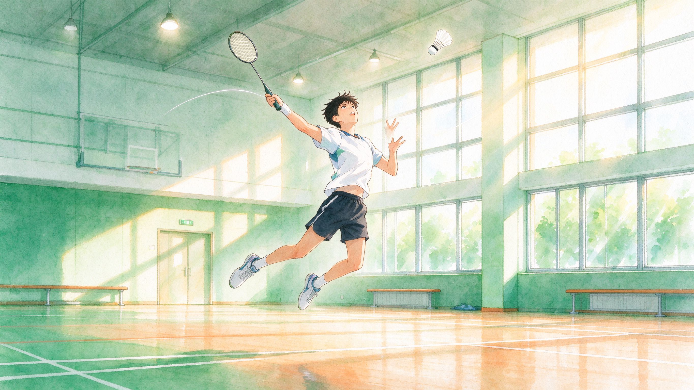

认知破局 ｜ 先读懂，再靠近
核心目标：破除大众对烧伤疤痕的误解与容貌偏见，用科学认知取代刻板印象。
1
疤痕的科学认知
疤痕是怎么形成的？▸
皮肤受伤后，身体启动修复。疤痕并非「长坏了」，而是愈合过程中胶原纤维重塑留下的痕迹。
四个阶段（点击已展开）：
① 损伤期：皮肤屏障被破坏，局部出血、发炎；② 炎症期：免疫细胞清理坏死组织，为修复做准备；③ 增生期：成纤维细胞大量产生胶原，伤口闭合、疤痕开始增厚发红；④ 成熟期：胶原重塑、血管减少，疤痕颜色变浅、质地变软。整个过程通常持续数月至数年。愈合阶段遵循医嘱，可让疤痕恢复更理想。
① 损伤期：皮肤屏障被破坏，局部出血、发炎；② 炎症期：免疫细胞清理坏死组织，为修复做准备；③ 增生期：成纤维细胞大量产生胶原，伤口闭合、疤痕开始增厚发红；④ 成熟期：胶原重塑、血管减少，疤痕颜色变浅、质地变软。整个过程通常持续数月至数年。愈合阶段遵循医嘱，可让疤痕恢复更理想。
不同类型的疤痕▸
疤痕形态多样，了解类型才能对症护理，也避免被夸大宣传误导。
① 增生性疤痕：超出原伤口边界不明显，色红质硬，随时间可能软化；② 萎缩性疤痕：表面凹陷或低于正常皮肤，常见于痘坑类损伤；③ 疤痕疙瘩：像「蟹足」样向周围浸润生长，常伴瘙痒疼痛，与个人体质相关；④ 色素沉着/减退：疤痕颜色比周围深或浅。不同类型护理重点不同，建议到正规医院皮肤科/烧伤整形科评估。
常见误区纠正▸
「疤痕会传染」「疤痕等于能力差」——这些说法不仅错误，更会伤人。
误区一：「疤痕会传染」——不会。疤痕是自身组织修复的产物，不具备传染性。误区二：「有疤痕就是能力差/不健康」——容貌与能力、品格毫无关系。误区三：「疤痕一定会消失」——疤痕多为永久性，但可通过护理改善外观。误区四：「偏方祛疤最有效」——许多偏方不仅无效，还可能造成二次损伤，务必拒绝。
为什么容貌偏见会伤人？▸
偏见不只影响心情，还影响一个人的社交、学习与就业机会。
容貌偏见是一种「标签化」思维——仅凭外观就推测一个人的性格与能力。它会让带疤痕的人面对异样的目光、被拒绝的机会，甚至内化成自我怀疑。破除偏见的第一步，是把「他/她是谁」和「他/她长什么样」分开看待。我们期待一个更包容的社会：看见面孔，更看见人。
2
偏见问答 · 大众高频疑问
问遇到有疤痕的人，我应该怎么表现才不冒犯？▾
把它当作一件「普通的身体特征」就好。自然地打招呼、正常交流，不过度盯着看，也不刻意回避。不必过分同情或追问「怎么弄的」——尊重对方的边界，和对待任何一位朋友一样平等、坦然，就是最好的方式。
问疤痕会影响一个人的工作能力吗？▾
完全不会。能力取决于知识、技能与经验，与外表毫无关系。许多优秀的医生、教师、工程师都带着疤痕生活。真正影响就业的，常常是招聘中未经审视的偏见——这也是我们在「职路护航」板块努力打破的壁垒。
问看到疤痕我会觉得「吓人」，这正常吗？▾
惊讶或不熟悉是正常的本能反应，关键在于我们如何处理它。可以告诉自己：这只是皮肤的另一种形态，背后是一个真实的人。多了解、多接触，陌生感会逐渐消退。我们愿意陪你一起，从「陌生」走向「理解」。
问如果我身边有朋友带疤痕，我能做点什么？▾
陪伴而不越界，支持而不怜悯。在对方愿意时倾听，在对方需要时伸出援手，遇到他人偏见时敢于站出来说一句公道话。你的接纳与平常心，就是最温暖的礼物。也可以在「互助空间站」分享陪伴心得，与更多人互相支持。
3
大众认知调研
数据来源：网络公开调研与媒体报道（出处见各卡片标注）。
以下引用公开调研数据，帮助了解「皮肤可见差异人群」在求职、社交中面临的真实处境。悬停图表可查看数值。
① 求职中遇到过歧视的应届生比例
数据来源：中国青年报社社会调查中心联合问卷网对 1333 名应届毕业生的调查（2025 年 4 月）。② 皮肤可见差异患者的真实处境
数据来源：南方+ 2020 年 6 月公开调研（皮肤可见差异患者群体）。③ 残障/差异人群求职曾被拒绝的比例
数据来源：澎湃新闻 2023 年 3 月，1083 份残障女性问卷报告。调研小结 · 知识点卡片（点击展开）
就业歧视并非个案▸
调查显示，超过六成应届毕业生在求职中遇到过歧视。
中国青年报社调查（2025）显示，64.9% 的受访应届生求职中遇到过歧视；对于带疤痕等「皮肤可见差异」的人群，这一比例往往更高。偏见影响的远不止一次面试。
「看得见的差异」常成为被拒理由▸
求职被拒的理由，常常与能力无关。
澎湃新闻 2023 年对 1083 名残障女性的调查显示，67.1% 曾因残障在求职中被拒绝。这正是「职路护航」板块存在的意义：把「看得见的偏见」转化为「看得见的公平」。
歧视背后是沉重的心理负担▸
偏见不只影响机会，更压在心头上。
公开调研显示，皮肤可见差异患者中 78% 曾遭受歧视、89% 表示有精神压力、37% 因患病失业或影响就业。被平等地对待、被真诚地倾听，往往比特殊照顾更珍贵。
偏见可以被行动改变▸
认知提升与行动参与相互促进——了解越多，越愿意伸出援手。
参与科普传播、志愿服务，或只是把正确的认知告诉身边的人，都是在为「无痕偏见」的消退添一份力。你的平常心，就是最温暖的礼物。
幸存者故事 · 他们活成了光（点击展开）
代婉月 · 全身 85% 烧伤的女孩▸
双手十指只剩左手大拇指，她依然学会写字、生活，走进大学校园。
据光明网 2025 年 4 月报道，代婉月在意外中全身 85% 烧伤。她依靠父母搀扶重新学会走路，用仅剩的左手大拇指一点点锻炼自理能力，并坚持读书。2025 年她与未婚夫订婚——两人同年同月同日生。她说：磨难后拼尽全力活下去，生活一定会给你光。
来源：光明网 2025-04-20 报道 ↗
来源：光明网 2025-04-20 报道 ↗

轩轩 · 与偶像同场打羽毛球的少年▸
全身 95% 烧伤、50 多次手术，他在羽毛球场上重新找回了光芒。
据央视网 2026 年 5 月报道，来自山东济南的 12 岁男孩轩轩，六年前一场大火烧伤了他 95% 以上的皮肤，熬过 50 多次手术留下满身疤痕。一次偶然接触羽毛球后，这个「每挥一下球拍都会皮肤刺痛」的男孩，凭借顽强意志坚持训练，最终实现了与偶像林丹同场「对决」的梦想。
来源：央视网 2026-05-26 报道 ↗
来源：央视网 2026-05-26 报道 ↗
付凡平 · 双手截肢仍创业助残的姑娘▸
19 岁失去双手与面容，她用行动证明：疤痕挡不住一个人发光。
据人民日报 2020 年 4 月报道，陕西延安姑娘付凡平在 19 岁那年因一场火灾失去双手、毁掉面容。她没有向命运低头，白手起家创办苹果产业助农公司，先后帮助 3000 余名残疾人与贫困户就业增收，并荣获「全国自强模范」。她说：命运可以拿走双手，但拿不走我重新站起来的勇气。
来源：人民日报 2020-04-30 报道 ↗
来源：人民日报 2020-04-30 报道 ↗